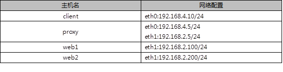

NSD CLUSTER DAY03
1 案例1：Keepalived高可用服务器
1.1 问题
准备三台Linux服务器，两台做Web服务器，并部署Keepalived高可用软件，一台作为客户端主机，实现如下功能：
- 使用Keepalived实现web服务器的高可用
- Web服务器IP地址分别为192.168.4.100和192.168.4.200
- Web服务器的浮动VIP地址为192.168.4.80
- 客户端通过访问VIP地址访问Web页面
1.2 方案
使用3台虚拟机，2台作为Web服务器，并部署Keepalived、1台作为客户端，拓扑结构如图-1所示，主机配置如表-1所示。
图-1
表-1

1.3 步骤
实现此案例需要按照如下步骤进行。
步骤一：配置网络环境（如果在前面课程已经完成该配置，可以忽略此步骤）
1）设置Web1服务器网络参数、配置Web服务
[root@web1 ~]# nmcli connection modify eth0 ipv4.method manual ipv4.addresses 192.168.4.100/24 connection.autoconnect yes [root@web1 ~]# nmcli connection up eth0 [root@web1 ~]# yum -y install httpd [root@web1 ~]# echo "192.168.4.100" > /var/www/html/index.html [root@web1 ~]# systemctl restart httpd
2）设置Web2服务器网络参数、配置Web服务
[root@web2 ~]# nmcli connection modify eth0 ipv4.method manual ipv4.addresses 192.168.4.200/24 connection.autoconnect yes [root@web2 ~]# nmcli connection up eth0 [root@web2 ~]# yum -y install httpd [root@web2 ~]# echo "192.168.4.200" > /var/www/html/index.html [root@web2 ~]# systemctl restart httpd
3）配置proxy主机的网络参数（如果已经设置，可以忽略此步骤）
[root@proxy ~]# nmcli connection modify eth0 ipv4.method manual ipv4.addresses 192.168.4.5/24 connection.autoconnect yes [root@proxy ~]# nmcli connection up eth0
步骤二：安装Keepalived软件
注意：两台Web服务器做相同的操作。
[root@web1 ~]# yum install -y keepalived [root@web2 ~]# yum install -y keepalived
步骤三：部署Keepalived服务
1）修改web1服务器Keepalived配置文件
[root@web1 ~]# vim /etc/keepalived/keepalived.conf
global_defs {
notification_email {
admin@tarena.com.cn //设置报警收件人邮箱
}
notification_email_from ka@localhost //设置发件人
smtp_server 127.0.0.1 //定义邮件服务器
smtp_connect_timeout 30
router_id web1 //设置路由ID号（实验需要修改）
}
vrrp_instance VI_1 {
state MASTER //主服务器为MASTER（实验需要修改）
interface eth0 //定义网络接口（实验需要修改）
virtual_router_id 50 //主辅VRID号必须一致（实验需要修改）
priority 100 //服务器优先级,优先级高优先获取VIP（实验需要修改）
advert_int 1
authentication {
auth_type pass
auth_pass forlvs //主辅服务器密码必须一致
}
virtual_ipaddress { 192.168.4.80 } //谁是主服务器谁获得该VIP（实验需要修改）
}
2）修改web2服务器Keepalived配置文件
[root@web2 ~]# vim /etc/keepalived/keepalived.conf
global_defs {
notification_email {
admin@tarena.com.cn //设置报警收件人邮箱
}
notification_email_from ka@localhost //设置发件人
smtp_server 127.0.0.1 //定义邮件服务器
smtp_connect_timeout 30
router_id web2 //设置路由ID号（实验需要修改）
}
vrrp_instance VI_1 {
state BACKUP //从服务器为BACKUP（实验需要修改）
interface eth0 //定义网络接口（实验需要修改）
virtual_router_id 50 //主辅VRID号必须一致（实验需要修改）
priority 50 //服务器优先级（实验需要修改）
advert_int 1
authentication {
auth_type pass
auth_pass forlvs //主辅服务器密码必须一致（实验需要修改）
}
virtual_ipaddress { 192.168.4.80 } //谁是主服务器谁配置VIP（实验需要修改）
}
3）启动服务
[root@web1 ~]# systemctl start keepalived [root@web2 ~]# systemctl start keepalived
4）配置防火墙和SELinux
启动keepalived会自动添加一个drop的防火墙规则，需要清空！
[root@web1 ~]# iptables -F [root@web1 ~]# setenforce 0 [root@web2 ~]# iptables -F [root@web1 ~]# setenforce 0
步骤四：测试
1）登录两台Web服务器查看VIP信息
[root@web1 ~]# ip addr show [root@web2 ~]# ip addr show
2) 客户端访问
客户端使用curl命令连接http://192.168.4.80，查看Web页面；关闭Web1服务器的网卡，客户端再次访问http://192.168.4.80，验证是否可以正常访问服务。
2 案例3：Keepalived+LVS服务器
2.1 问题
使用Keepalived为LVS调度器提供高可用功能，防止调度器单点故障，为用户提供Web服务：
- LVS1调度器真实IP地址为192.168.4.5
- LVS2调度器真实IP地址为192.168.4.6
- 服务器VIP地址设置为192.168.4.15
- 真实Web服务器地址分别为192.168.4.100、192.168.4.200
- 使用加权轮询调度算法，真实web服务器权重不同
2.2 方案
使用5台虚拟机，1台作为客户端主机、2台作为LVS调度器、2台作为Real Server，实验拓扑环境结构如图-2所示，基础环境配置如表-2所示。

图-3
表-2
注意：所有主机都需要配置IP地址与有效的YUM源。
2.3 步骤
实现此案例需要按照如下步骤进行。
步骤一：配置网络环境
1）设置Web1服务器的网络参数
[root@web1 ~]# nmcli connection modify eth0 ipv4.method manual \ ipv4.addresses 192.168.4.100/24 connection.autoconnect yes [root@web1 ~]# nmcli connection up eth0
接下来给web1配置VIP地址
注意：这里的子网掩码必须是32（也就是全255），网络地址与IP地址一样，广播地址与IP地址也一样。
[root@web1 ~]# cd /etc/sysconfig/network-scripts/
[root@web1 ~]# cp ifcfg-lo{,:0}
[root@web1 ~]# vim ifcfg-lo:0
DEVICE=lo:0
IPADDR=192.168.4.15
NETMASK=255.255.255.255
NETWORK=192.168.4.15
BROADCAST=192.168.4.15
ONBOOT=yes
NAME=lo:0
注意：这里因为web1也配置与调度器一样的VIP地址，默认肯定会出现地址冲突。
写入这四行的主要目的就是访问192.168.4.15的数据包，只有调度器会响应，其他主机都不做任何响应。
[root@web1 ~]# vim /etc/sysctl.conf #手动写入如下4行内容 net.ipv4.conf.all.arp_ignore = 1 net.ipv4.conf.lo.arp_ignore = 1 net.ipv4.conf.lo.arp_announce = 2 net.ipv4.conf.all.arp_announce = 2 #当有arp广播问谁是192.168.4.15时，本机忽略该ARP广播，不做任何回应 #本机不要向外宣告自己的lo回环地址是192.168.4.15
重启网络服务，设置防火墙与SELinux
[root@web1 ~]# systemctl restart network [root@web1 ~]# ifconfig [root@web1 ~]# systemctl stop firewalld [root@web1 ~]# setenforce 0
2）设置Web2服务器的网络参数
[root@web2 ~]# nmcli connection modify eth0 ipv4.method manual \ ipv4.addresses 192.168.4.200/24 connection.autoconnect yes [root@web2 ~]# nmcli connection up eth0
接下来给web2配置VIP地址
注意：这里的子网掩码必须是32（也就是全255），网络地址与IP地址一样，广播地址与IP地址也一样。
[root@web2 ~]# cd /etc/sysconfig/network-scripts/
[root@web2 ~]# cp ifcfg-lo{,:0}
[root@web2 ~]# vim ifcfg-lo:0
DEVICE=lo:0
IPADDR=192.168.4.15
NETMASK=255.255.255.255
NETWORK=192.168.4.15
BROADCAST=192.168.4.15
ONBOOT=yes
NAME=lo:0
注意：这里因为web2也配置与代理一样的VIP地址，默认肯定会出现地址冲突。
写入这四行的主要目的就是访问192.168.4.15的数据包，只有调度器会响应，其他主机都不做任何响应。
[root@web2 ~]# vim /etc/sysctl.conf #手动写入如下4行内容 net.ipv4.conf.all.arp_ignore = 1 net.ipv4.conf.lo.arp_ignore = 1 net.ipv4.conf.lo.arp_announce = 2 net.ipv4.conf.all.arp_announce = 2 #当有arp广播问谁是192.168.4.15时，本机忽略该ARP广播，不做任何回应 #本机不要向外宣告自己的lo回环地址是192.168.4.15
重启网络服务，设置防火墙与SELinux
[root@web2 ~]# systemctl restart network [root@web2 ~]# ifconfig [root@web2 ~]# systemctl stop firewalld [root@web2 ~]# setenforce 0
3）配置proxy1主机的网络参数(不配置VIP，由keepalvied自动配置)
[root@proxy1 ~]# nmcli connection modify eth0 ipv4.method manual \ ipv4.addresses 192.168.4.5/24 connection.autoconnect yes [root@proxy1 ~]# nmcli connection up eth0
4）配置proxy2主机的网络参数(不配置VIP，由keepalvied自动配置)
注意：按照前面的课程环境，默认没有该虚拟机，需要重新建一台虚拟机proxy2。
[root@proxy2 ~]# nmcli connection modify eth0 ipv4.method manual \ ipv4.addresses 192.168.4.6/24 connection.autoconnect yes [root@proxy2 ~]# nmcli connection up eth0
步骤二：配置后台web服务
1）安装软件，自定义Web页面（web1和web2主机）
[root@web1 ~]# yum -y install httpd [root@web1 ~]# echo "192.168.4.100" > /var/www/html/index.html [root@web2 ~]# yum -y install httpd [root@web2 ~]# echo "192.168.4.200" > /var/www/html/index.html
3）启动Web服务器软件(web1和web2主机)
[root@web1 ~]# systemctl start httpd ; systemctl enable httpd [root@web2 ~]# systemctl start httpd ; systemctl enable httpd
步骤三：调度器安装Keepalived与ipvsadm软件
注意：两台LVS调度器执行相同的操作（如何已经安装软件，可用忽略此步骤）。
安装软件
[root@proxy1 ~]# yum install -y keepalived [root@proxy1 ~]# systemctl enable keepalived [root@proxy1 ~]# yum install -y ipvsadm [root@proxy1 ~]# ipvsadm -C [root@proxy2 ~]# yum install -y keepalived [root@proxy2 ~]# systemctl enable keepalived [root@proxy2 ~]# yum install -y ipvsadm [root@proxy2 ~]# ipvsadm -C
步骤四：部署Keepalived实现LVS-DR模式调度器的高可用
1）LVS1调度器设置Keepalived，并启动服务
[root@proxy1 ~]# vim /etc/keepalived/keepalived.conf
global_defs {
notification_email {
admin@tarena.com.cn //设置报警收件人邮箱
}
notification_email_from ka@localhost //设置发件人
smtp_server 127.0.0.1 //定义邮件服务器
smtp_connect_timeout 30
router_id lvs1 //设置路由ID号(实验需要修改)
}
vrrp_instance VI_1 {
state MASTER //主服务器为MASTER（实验需要修改）
interface eth0 //定义网络接口（实验需要修改）
virtual_router_id 50 //主辅VRID号必须一致（实验需要修改）
priority 100 //服务器优先级（实验需要修改）
advert_int 1
authentication {
auth_type pass
auth_pass forlvs //主辅服务器密码必须一致（实验需要修改）
}
virtual_ipaddress { 192.168.4.15 } //配置VIP（实验需要修改）
}
virtual_server 192.168.4.15 80 { //设置ipvsadm的VIP规则（实验需要修改）
delay_loop 6
lb_algo wrr //设置LVS调度算法为WRR
lb_kind DR //设置LVS的模式为DR
#persistence_timeout 50
#注意这样的作用是保持连接，开启后，客户端在一定时间内始终访问相同服务器
protocol TCP
real_server 192.168.4.100 80 { //设置后端web服务器真实IP（实验需要修改）
weight 1 //设置权重为1
TCP_CHECK {
connect_timeout 3
nb_get_retry 3
delay_before_retry 3
}
}
real_server 192.168.4.200 80 { //设置后端web服务器真实IP（实验需要修改）
weight 2 //设置权重为2
TCP_CHECK {
connect_timeout 3
nb_get_retry 3
delay_before_retry 3
}
}
}
[root@proxy1 ~]# systemctl start keepalived
[root@proxy1 ~]# ipvsadm -Ln #查看LVS规则
[root@proxy1 ~]# ip a s #查看VIP配置
2）LVS2调度器设置Keepalived
[root@proxy2 ~]# vim /etc/keepalived/keepalived.conf
global_defs {
notification_email {
admin@tarena.com.cn //设置报警收件人邮箱
}
notification_email_from ka@localhost //设置发件人
smtp_server 127.0.0.1 //定义邮件服务器
smtp_connect_timeout 30
router_id lvs2 //设置路由ID号（实验需要修改）
}
vrrp_instance VI_1 {
state BACKUP //从服务器为BACKUP（实验需要修改）
interface eth0 //定义网络接口（实验需要修改）
virtual_router_id 50 //主辅VRID号必须一致（实验需要修改）
priority 50 //服务器优先级（实验需要修改）
advert_int 1
authentication {
auth_type pass
auth_pass forlvs //主辅服务器密码必须一致（实验需要修改）
}
virtual_ipaddress { 192.168.4.15 } //设置VIP（实验需要修改）
}
virtual_server 192.168.4.15 80 { //自动设置LVS规则（实验需要修改）
delay_loop 6
lb_algo wrr //设置LVS调度算法为WRR
lb_kind DR //设置LVS的模式为DR
# persistence_timeout 50
#注意这样的作用是保持连接，开启后，客户端在一定时间内始终访问相同服务器
protocol TCP
real_server 192.168.4.100 80 { //设置后端web服务器的真实IP（实验需要修改）
weight 1 //设置权重为1
TCP_CHECK {
connect_timeout 3
nb_get_retry 3
delay_before_retry 3
}
}
real_server 192.168.4.200 80 { //设置后端web服务器的真实IP（实验需要修改）
weight 2 //设置权重为2
TCP_CHECK {
connect_timeout 3
nb_get_retry 3
delay_before_retry 3
}
}
[root@proxy2 ~]# systemctl start keepalived
[root@proxy2 ~]# ipvsadm -Ln #查看LVS规则
[root@proxy2 ~]# ip a s #查看VIP设置
步骤五：客户端测试
客户端使用curl命令反复连接http://192.168.4.15，查看访问的页面是否会轮询到不同的后端真实服务器。
3 案例1：配置HAProxy负载平衡集群
3.1 问题
准备4台Linux服务器，两台做Web服务器，1台安装HAProxy，1台做客户端，实现如下功能：
- 客户端访问HAProxy，HAProxy分发请求到后端Real Server
- 要求HAProxy可以根据Cookie为客户端分配固定后端服务器
- 开启HAProxy监控页面，及时查看调度器状态
- 设置HAProxy为开机启动
3.2 方案
使用4台虚拟机，1台作为HAProxy调度器、2台作为Real Server、1台作为客户端，拓扑结构如图-3所示，具体配置如表-3所示。

图-3
表-3
3.3 步骤
实现此案例需要按照如下步骤进行。
注意事项：
将前面实验VIP、LVS等实验的内容清理干净！！！！！！
删除所有设备的VIP，清空所有LVS设置，关闭keepalived！！！
web1关闭多余的网卡与VIP，配置本地真实IP地址。
[root@web1 ~]# ifdown eth0 [root@web1 ~]# ifdown lo:0 [root@web1 ~]# nmcli connection modify eth1 ipv4.method manual \ ipv4.addresses 192.168.2.100/24 connection.autoconnect yes [root@web1 ~]# nmcli connection up eth1
Web2关闭多余的网卡与VIP，配置本地真实IP地址。
[root@web2 ~]# ifdown eth0 [root@web2 ~]# ifdown lo:0 [root@web2 ~]# nmcli connection modify eth1 ipv4.method manual \ ipv4.addresses 192.168.2.200/24 connection.autoconnect yes [root@web2 ~]# nmcli connection up eth1
proxy关闭keepalived服务，清理LVS规则。
[root@proxy ~]# systemctl stop keepalived [root@proxy ~]# systemctl disable keepalived [root@proxy ~]# ipvsadm -C [root@proxy ~]# nmcli connection modify eth0 ipv4.method manual \ ipv4.addresses 192.168.4.5/24 connection.autoconnect yes [root@proxy ~]# nmcli connection up eth0 [root@proxy ~]# nmcli connection modify eth1 ipv4.method manual \ ipv4.addresses 192.168.2.5/24 connection.autoconnect yes [root@proxy ~]# nmcli connection up eth1
步骤一：配置后端Web服务器
设置两台后端Web服务（如果已经配置完成，可用忽略此步骤）
[root@web1 ~]# yum -y install httpd [root@web1 ~]# systemctl start httpd [root@web1 ~]# echo "192.168.2.100" > /var/www/html/index.html [root@web2 ~]# yum -y install httpd [root@web2 ~]# systemctl start httpd [root@web2 ~]# echo "192.168.2.200" > /var/www/html/index.html
步骤二：部署HAProxy服务器
1）配置网络，安装软件
[root@haproxy ~]# echo 'net.ipv4.ip_forward = 1' >> sysctl.conf //开启路由转发 [root@haproxy ~]# sysctl -p [root@haproxy ~]# yum -y install haproxy
2）修改配置文件
[root@haproxy ~]# vim /etc/haproxy/haproxy.cfg
global
log 127.0.0.1 local2 ###[err warning info debug]
chroot /usr/local/haproxy
pidfile /var/run/haproxy.pid ###haproxy的pid存放路径
maxconn 4000 ###最大连接数，默认4000
user haproxy
group haproxy
daemon ###创建1个进程进入deamon模式运行
defaults
mode http ###默认的模式mode { tcp|http|health } log global ###采用全局定义的日志
option dontlognull ###不记录健康检查的日志信息
option httpclose ###每次请求完毕后主动关闭http通道
option httplog ###日志类别http日志格式
option forwardfor ###后端服务器可以从Http Header中获得客户端ip
option redispatch ###serverid服务器挂掉后强制定向到其他健康服务器
timeout connect 10000 #如果backend没有指定，默认为10s
timeout client 300000 ###客户端连接超时
timeout server 300000 ###服务器连接超时
maxconn 60000 ###最大连接数
retries 3 ###3次连接失败就认为服务不可用，也可以通过后面设置
listen stats
bind 0.0.0.0:1080 #监听端口
stats refresh 30s #统计页面自动刷新时间
stats uri /stats #统计页面url
stats realm Haproxy Manager #统计页面密码框上提示文本
stats auth admin:admin #统计页面用户名和密码设置
#stats hide-version #隐藏统计页面上HAProxy的版本信息
listen websrv-rewrite 0.0.0.0:80
cookie SERVERID rewrite
balance roundrobin
server web1 192.168.2.100:80 cookie app1inst1 check inter 2000 rise 2 fall 5
server web2 192.168.2.200:80 cookie app1inst2 check inter 2000 rise 2 fall 5
3）启动服务器并设置开机启动
[root@haproxy ~]# systemctl start haproxy [root@haproxy ~]# systemctl enable haproxy
步骤三：客户端验证
客户端配置与HAProxy相同网络的IP地址，并使用火狐浏览器访问http://192.168.4.5，测试调度器是否正常工作，客户端访问http://192.168.4.5:1080/stats测试状态监控页面是否正常。访问状态监控页的内容，参考图-4所示。

图-4
备注：
Queue队列数据的信息（当前队列数量，最大值，队列限制数量）；
Session rate每秒会话率（当前值，最大值，限制数量）；
Sessions总会话量（当前值，最大值，总量，Lbtot: total number of times a server was selected选中一台服务器所用的总时间）；
Bytes（入站、出站流量）；
Denied（拒绝请求、拒绝回应）；
Errors（错误请求、错误连接、错误回应）；
Warnings（重新尝试警告retry、重新连接redispatches）；
Server(状态、最后检查的时间（多久前执行的最后一次检查）、权重、备份服务器数量、down机服务器数量、down机时长)。